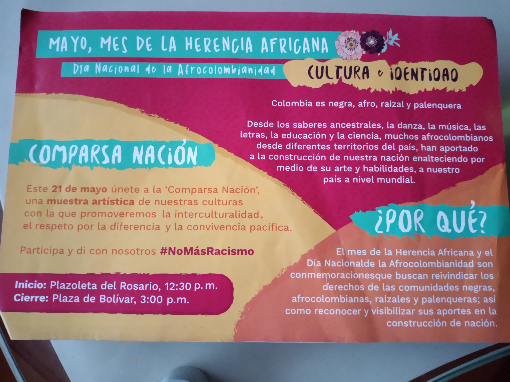
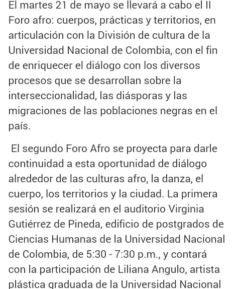
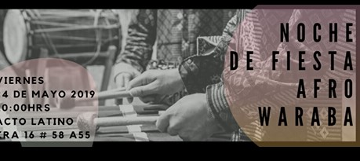
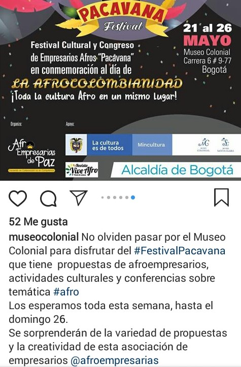
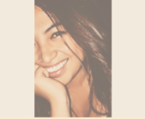
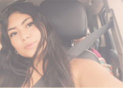

Agenda de actividades realizadas en Bogotá para conmemorar
el mes de la herencia Africana
- 
- 
- 
- 
MAYO, MES DE LA HERENCIA AFRICANA
Proyecto educativo, direccionado por la facultad de comunicación
social de la Universidad Santo Tomás, que tuvo como principal
objetivo, la reunión y el encuentro de las diferentes comunidades
Afros que habitan el territorio capitalino, esto se llevó a cabo
con la colaboración de la Asociación de Estudiantes
Afrocolombianos (ASNEA) y tuvo como finalidad, el recuperar
las costumbres desde la juventud Afrocolombiana ubicada
en la ciudad de Bogotá.
Equipo de Trabajo

Luisa Betancur Sanchez

Daniela Pedroza Romero

Yudi Rodriguez Murcia